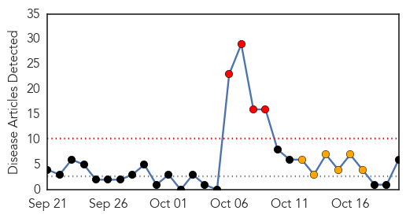

30 Day Trends
Web: 4 alerts, 6 warnings
Twitter: 0 alerts, 0 warnings
Top Articles:
- 0.948
- The Online Citizen
- 0.887
- More than 3,000 dental patients warned they may have been exposed to blood-borne viruses like HIV and hepatitis
- 0.879
- Hepatitis C virus infection may be 'contributing factor' in one death, news, Health News, AsiaOne YourHealth
- 0.798
- SGH files police report to ascertain if foul play involved in hep C spread; 2 US experts appointed to committee, Health News & Top Stories
- 0.789
- Thousands of dental patients offered HIV and hepatitis tests after dentist reused surgery equipment
- 0.564
- Global Emergency Overview Snapshot 14 - 20 October 2015 - World
Top Tweets:
-
No tweets found for Oct 20, 2015
Web/News Articles
Tweets

Article Locations

Article Confidences